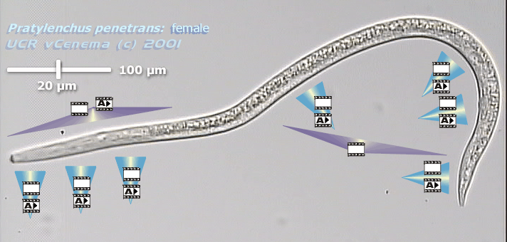

|
|
|
Pratylenchus penetrans (Cobb, 1917) Filipjev & Schuurmans-Stekhoven, 1941Image map of female morphologyClick onClick on 
Male tail morphology:-Click here for an annotated clip of the male tail.-Click here for a blank clip of the male tail. |